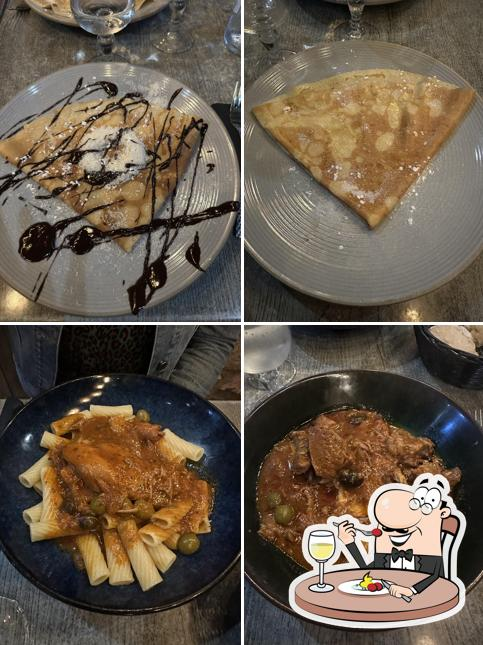
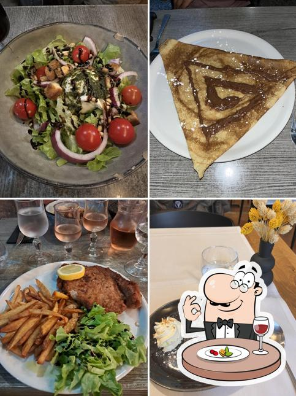
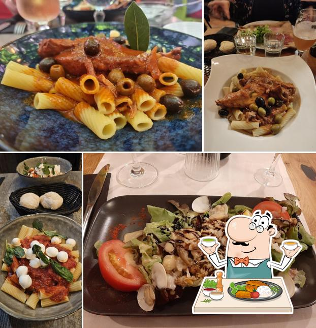
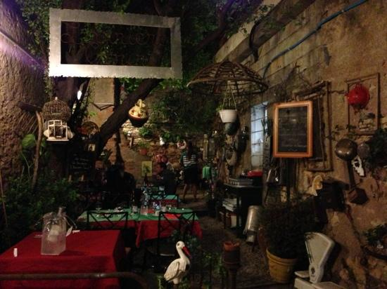
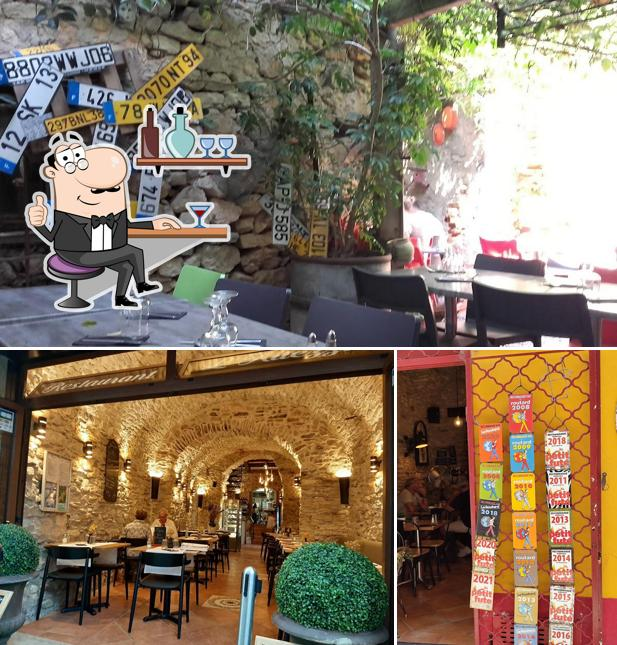
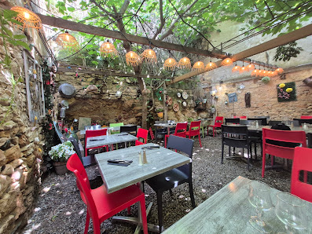

Ravioli au brocciu
Pâte fraîche, brocciu crémeux, une pointe de menthe. Un classique de l'île que l'on fait rouler à la main, servi avec un filet d'huile.
Signature corse
Restaurant corse · Saint-Florent
Poussez la ruelle, et tout change. Au cœur de la vieille ville de Saint-Florent, L'Arrière Cour vous accueille dans un jardin secret de pierres et de verdure, autour d'une cuisine corse généreuse, à la fois maison et sans chichis.

La cour, à l'heure bleue.
La découverte
On longe les façades tièdes de la vieille ville, une ruelle s'ouvre, et voilà la porte, presque timide. Derrière, la cour respire : pierres pâles, tables dressées, odeur de basilic. Au centre, un platane centenaire étend son feuillage comme une toile vivante, et la lumière se fait plus douce, plus sucrée.
Ici, on vient partager une cuisine corse sans détour : des assiettes honnêtes, généreuses, qui racontent l'île. L'accueil est simple et chaleureux, le service va à l'essentiel. On reste plus longtemps que prévu, on commande un dernier café, on regarde la nuit tomber sur la verdure. C'est cela, l'Arrière Cour.

L'été, la cour se remplit doucement à la tombée du jour.
Spécialités maison
Quelques plats traversent les saisons, on les prépare comme à la maison. Trois signatures à goûter, au moins une fois, sous le platane.

Pâte fraîche, brocciu crémeux, une pointe de menthe. Un classique de l'île que l'on fait rouler à la main, servi avec un filet d'huile.

Le gâteau corse par excellence : brocciu, œufs, zeste de citron, parfum d'eau-de-vie. Moelleux dedans, légèrement doré dessus.

Sarrasin ou froment, garnitures salées ou sucrées. Portion généreuse, à déguster à l'ombre du platane, comme au coin d'un feu.
En images
Quelques instants volés à la cour : lumière de midi, tables qui se remplissent, pierres qui gardent la chaleur du jour.



Note Google
sur 1 368 avis Google
« Une jolie cour ombragée, décor atypique plein de charme et d'authenticité, cuisine copieuse et savoureuse. »
« Restaurant atypique, un magnifique platane au-dessus, un jardin caché en plein cœur de Saint-Florent. »
Informations pratiques
Ouvert 7j/7 d'avril à octobre.
Un appel suffit : l'équipe décroche, note votre table, on vous attend sous le platane.
À quelques pas du port, dans la vieille ville.